تقرير مرحلة UI-2: نظام التصميم في بقية الشاشات، شريط البيئة الدائم (G3)، وحماية المسودات من التحديث الحي (G4)
اختار يامن (2026-10-25) الخيار A: استكمال نظام التصميم على الشاشات المتبقية (P1)، مع بندين من قائمة الانتظار: شريط البيئة (G3) وحماية المسودات (G4). وطلب الإبقاء على الإصدار الحالي بشكله القديم في كل وقت، فحُفظ كما هو في الفرع classic/v0.9.0 الذي يمكن بناؤه وتشغيله متى شاء.
| المجال | قبل | بعد |
|---|---|---|
| قوائم التطبيق | صفوف ListTile بأيقونة رمادية بلا خلفية. | بطاقات بيضاء مستديرة (NavCard) بمربع أيقونة ملون وعنوان عريض ووصف وسهم: الإعدادات، فضاء السلامة، أرقام الطوارئ، الطبيب، التطوع، تحقق السلامة، التنبيهات المستلمة، النصائح، التسجيل. |
| أرقام الطوارئ | أيقونة حمراء ورقم وسماعة رمادية. | مربع أحمر للجهة، الرقم بخط عريض، ومربع اتصال أخضر واضح. |
| عناوين اللوحة | عنوان نصي فقط. | كل عنوان من 44 صفحة يحمل مربع أيقونة قسمه، بنفس اللون والرمز في القائمة. |
| مؤشرات اللوحة | رقم وعنوان. | مربع أيقونة فاتح لكل مؤشر (المجموع، المستلمة، قيد المعالجة، المغلقة، الأولوية العالية، التحليل، زمن الاستجابة، المؤسسات، الشهادات). |
| البوابة | عناوين وتبويبات نصية. | عناوين بمربع أيقونة، قائمة «مؤسساتي» بمربع أيقونة لكل مؤسسة، وتبويبات فضاء المؤسسة العشرة بمربعات صغيرة ملونة. |
كل مفاتيح الاختبار ونصوص العناوين ومعرّفاتها بقيت كما هي، فلم يتغيّر أي اختبار قديم. الأيقونات زخرفية مخفية عن قارئ الشاشة، والنص يحمل المعنى.
شريط كهرماني [SIM] أعلى اللوحة والبوابة والتطبيق يسمّي البيئة، حتى لا يخلط المشغّل بين بيانات التجربة والبيانات الحقيقية.
قيمة ENVIRONMENT_BANNER | ما يظهر |
|---|---|
auto (الافتراضي) | «بيئة تطوير» عندما APP_ENV=development، ولا شيء في الإنتاج |
development / pilot / training | بيئة تطوير / تجربة ميدانية / تدريب |
off | لا شريط |
اللوحة والبوابة تقرآن GET /api/v1/app/environment. التطبيق يقرأ الحقل environment من جواب الإصدار المحفوظ، ولا يتصل بالخادم من أجله أبدا: قبل قبول الميثاق لا يخرج أي طلب، وأرقام الطوارئ تعمل دون اتصال كما كانت (اختبار مخصص).
sessionStorage لكل سجل وحقل: رسالة الاستدعاء، ملاحظة الحادث، ملخص الإغلاق والدروس، ملاحظة تغيير الحالة، الرد على «اتصل بنا». يعود إذا أُعيد رسم النموذج بتحديث حي أو أُعيد تحميل الصفحة، ويُمحى بعد الإرسال الناجح.| الجزء | الاختبارات | التقدم |
|---|---|---|
| تطبيق الهاتف (UI-2a، G3) | 414 ناجحة، التحليل والتنسيق نظيفان | 100% |
| لوحة القيادة (UI-2b، G3، G4) | 436 ناجحة + axe على 10 شاشات بلغتين: 0 مخالفة خطيرة | 100% |
| بوابة المؤسسات (UI-2c، G3) | 91 ناجحة + axe على 12 شاشة بلغتين: 0 مخالفة | 100% |
| الواجهة البرمجية (G3) | ruff و mypy نظيفان؛ اختبارات test_environment_banner.py تعمل في CI | 100% |
| بقية شاشات القوائم في التطبيق (الإشعارات، المؤسسة، عناصر الدليل، جهات الاتصال، الملف الطبي) | — | عند لمسها |
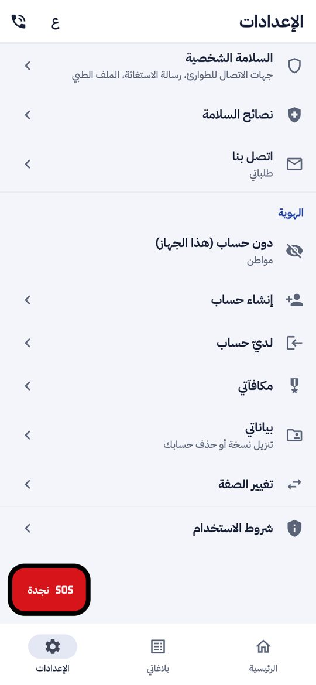
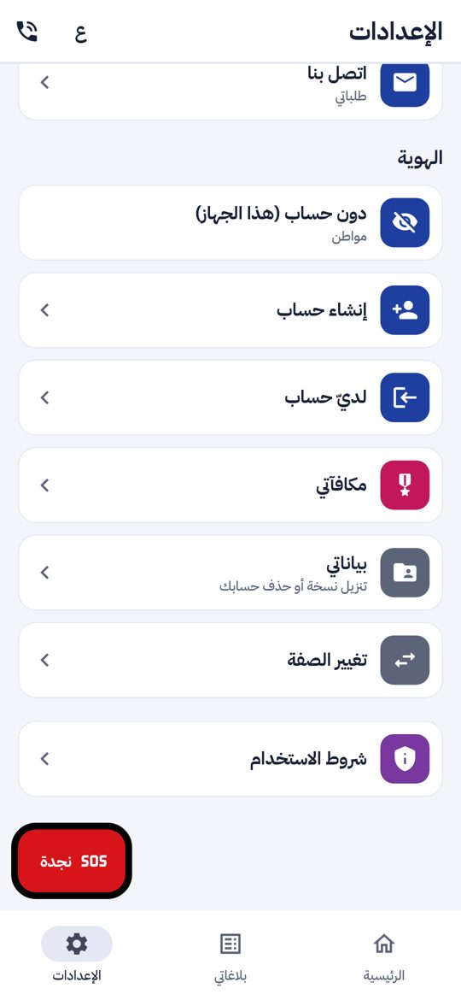
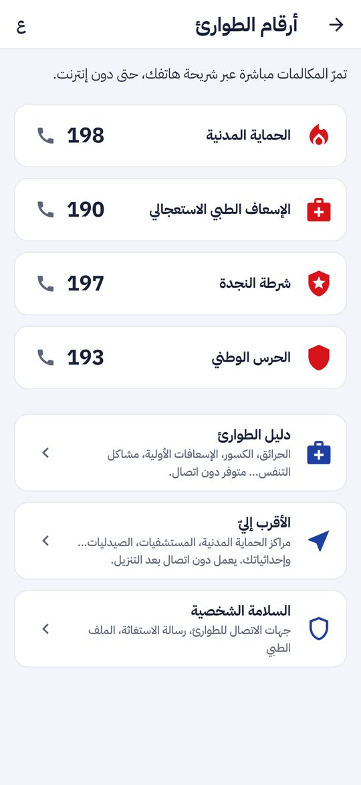
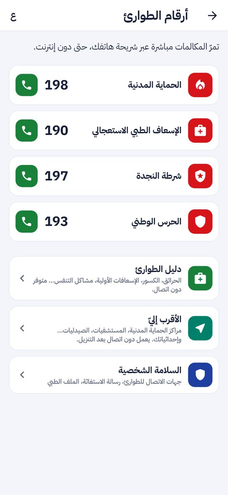
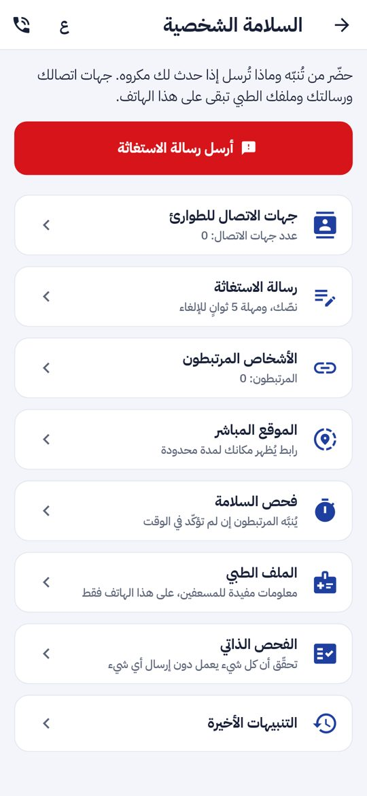
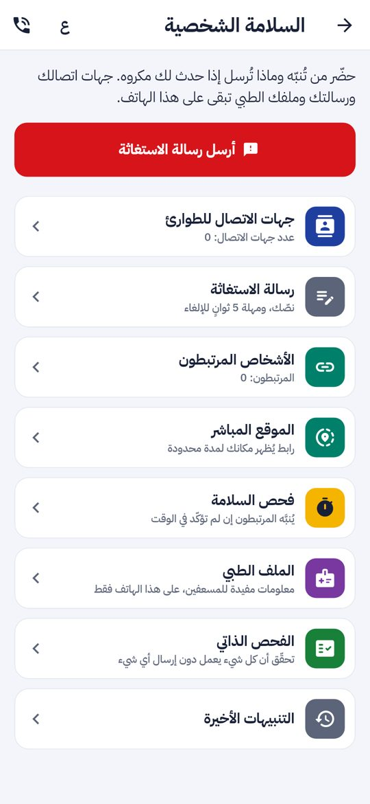
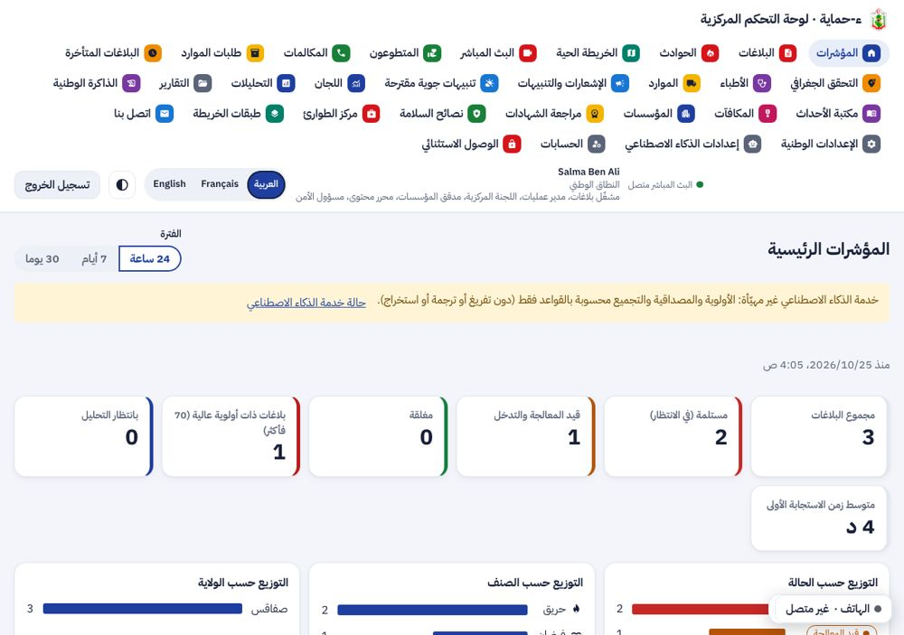
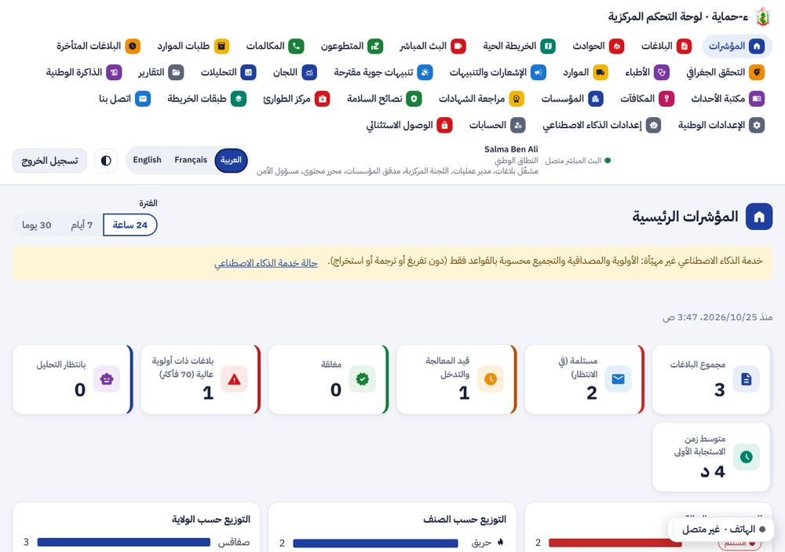
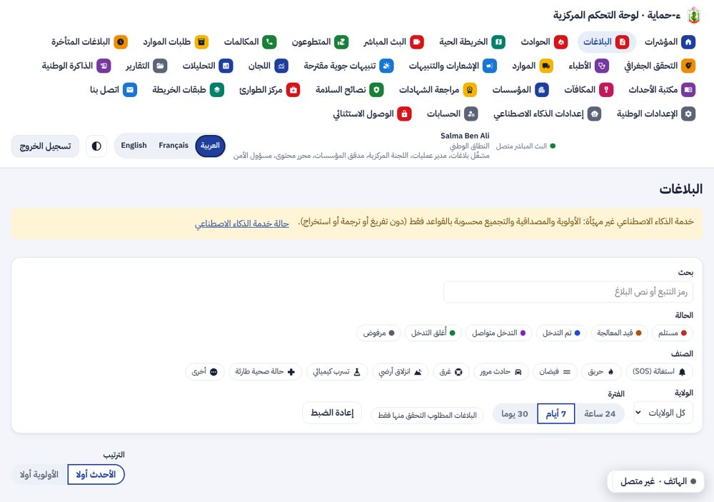
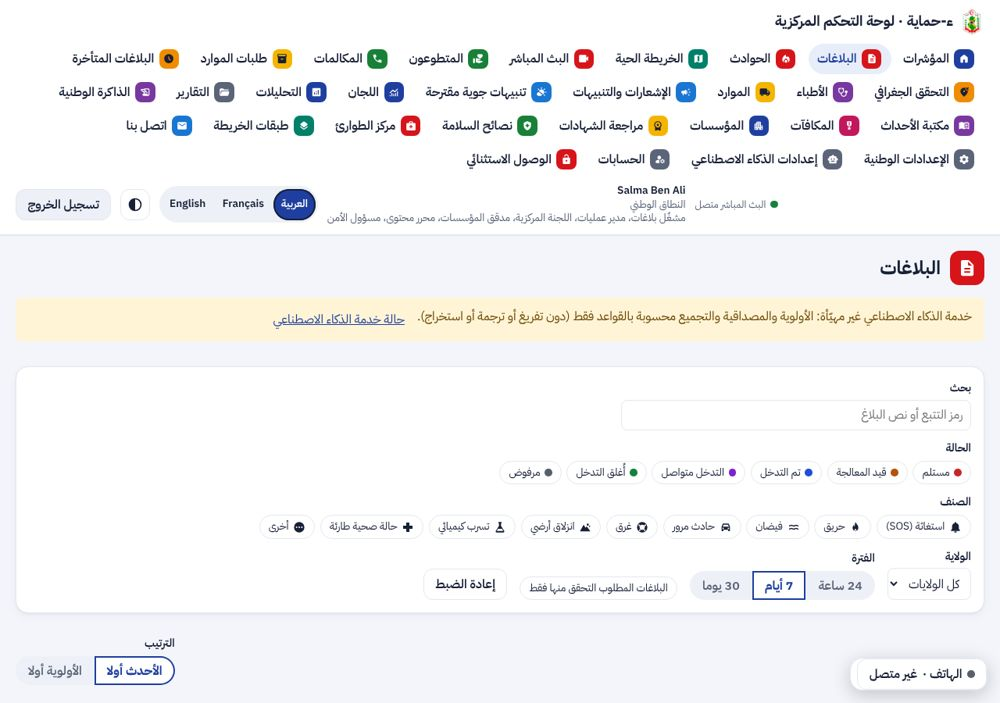
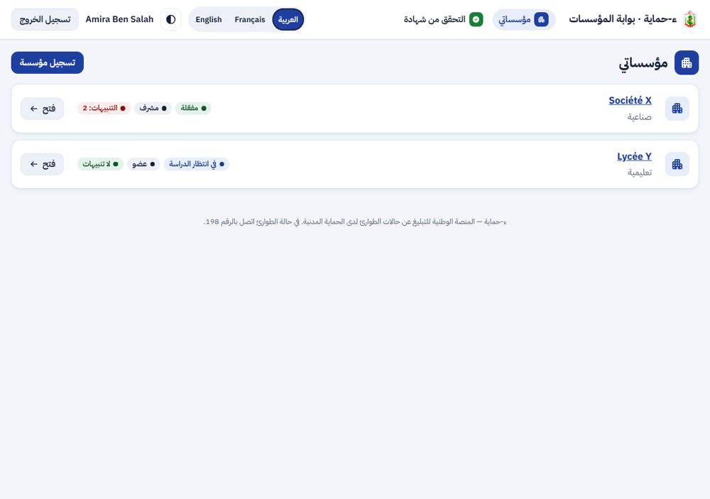
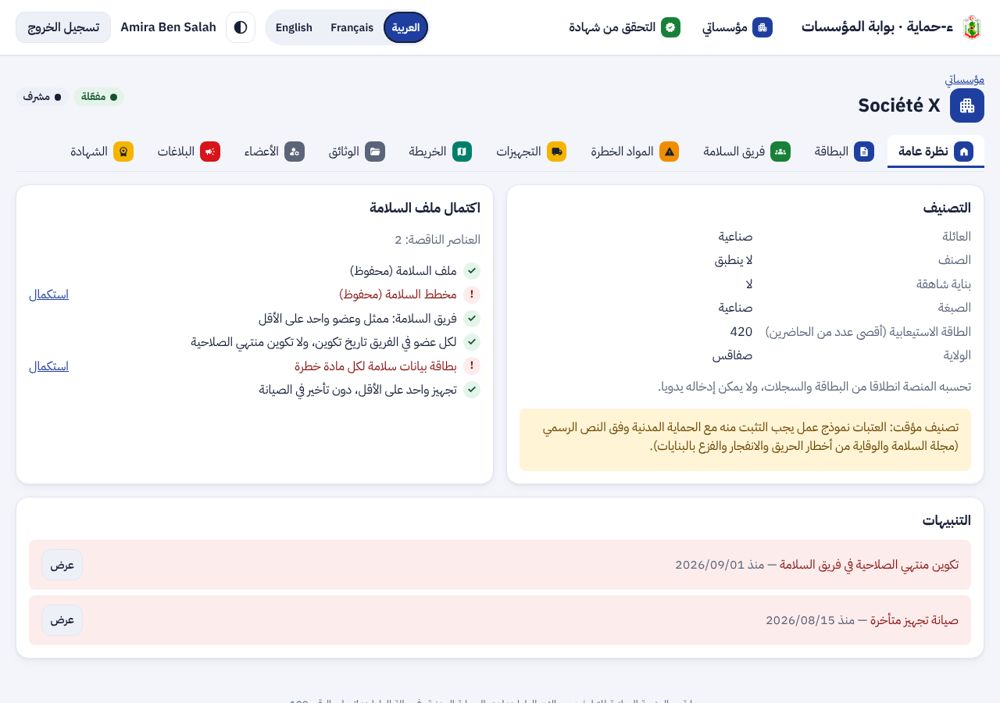
الصور مولّدة في بيئة الاختبار ببيانات [SIM]. شعار الديوان لا يظهر في صور التطبيق ويظهر على الهاتف.
| الوثيقة | ما تغيّر | الملف في ملفات المشروع |
|---|---|---|
| مرجع التصميم ونظام التصميم | المكوّنات الجديدة: عنوان الصفحة بالأيقونة، شريط البيئة، تنبيه المسودة | phase-ui2/design-reference.html، phase-ui2/design-system.md |
| المخططات UML | الإصدار 3: حالتا استعمال للمشغّل (المسودة المحمية، شريط البيئة) | diagrams/e-Himaya_Diagrammes_UML.docx و .pdf والمصادر |
| الملف الوصفي وكراس الشروط | V4: المتطلبات F-DSH-38 و F-DSH-39 و F-DSH-40 و F-APP-144 منجزة، الأعداد، القرارات، خارطة الطريق | spec/e-Himaya_Description_V4.docx و .pdf |
| العرض للمسؤولين | 19 مرحلة، أعداد الاختبارات، خارطة الطريق | presentation/e-Himaya_Presentation.pptx و .pdf |
| دليلا التثبيت وقائمة الانتظار | الإعداد ENVIRONMENT_BANNER؛ G3 و G4 منجزان، P1 منجز جزئيا | guide/ |
ENVIRONMENT_BANNER=pilot.